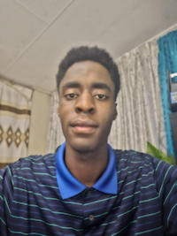

Augustine Ogubie | WDD 130
Good day to whoever will read this. As you have and will see, my name is Augustine Ogubie. I am a young 20 year old who has recently returned from serving a fulltime mission. I enjoy learning in general, but what I enjoy learning about the most is vehicles and technologies. I can be very active and have played a variety of sports throughout my high-school, including soccer, basketball, squash, table-tennis and rugby.